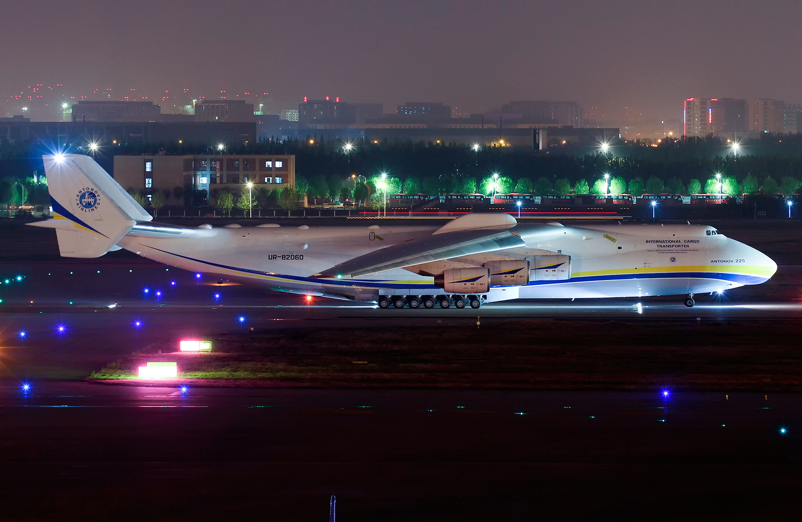
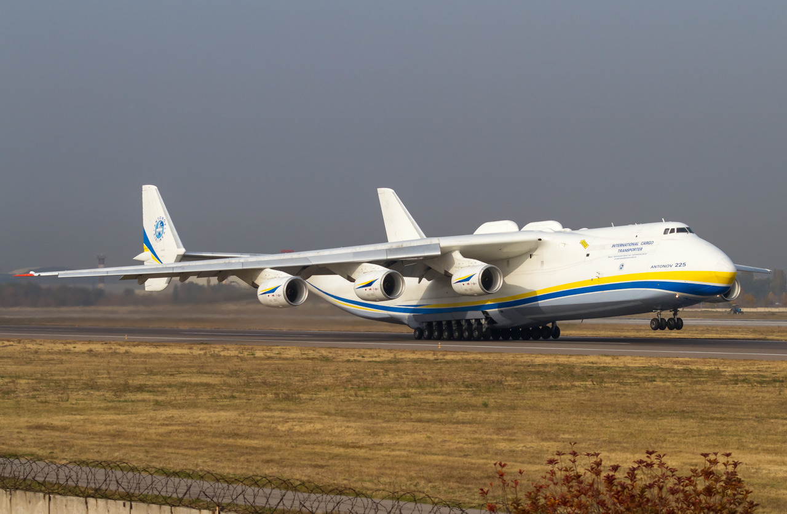
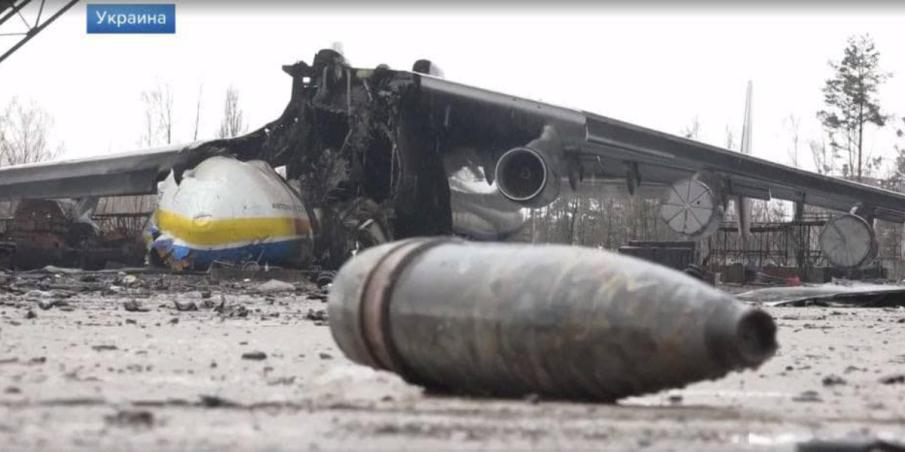

The Giant of the skies, the Antonov An-225 Mriya was destroyed in the Battle of Antonov Airport during the Russian Invasion of Ukraine, 2022. It was on February 27, 2022, when a picture of the destroyed An-225 was released on Twitter. This incident is truly heart-breaking for avgeeks, all around the world.
This giant was developed from the An-124, which many recognize as the smaller cousin of the Mriya. Produced in the 1980s, it was the only one of its kind. The main purpose of the aircraft was to transport the Buran-class orbiters, part of the Russian Space Orbiter Programme. It was originally planned to replace the aging Myasishchev VM-T.
Antonov Airlines (Antonov Design Bureau) Antonov An-225 Mriya. Photo: Justin Stöckel via planespotters.net
Interestingly, the construction of a second An-225 had begun in late 1980s for the Soviet Space Programme. However, the collapse of the USSR in 1991, caused the construction to cease. Both the An-225s were put in storage in the early 1990s. In the early 2000s, a desperate need for heavy cargo transport vehicles was felt. The first An-225 was restored into service in 2001 and plans to complete the second aircraft by 2008 followed. Severe delays and lack of funds caused the completion of the craft to halt and was abandoned in 2009. Various sources claim that around 60% of the work on the second aircraft had been completed.
After receiving its type certificate in 2001, the Mriya had officially commenced operations. It has till date participated in a lot of relief causes, a prime example of which is when it transported tons of medical supplies from China to various regions of the world.

Antonov Airlines (Antonov Design Bureau) Antonov An-225 Mriya. Photo: Helloeddie via planespotters.net
It also holds a bunch of world records, which most of us think are not going to be broken anytime soon. It holds the record for the airlifted total payload, which stands at a whopping 253,820 kg or 559,580 lb. It has also transported the heaviest single cargo item, which has been sent by air freight which was a 16.23m long and 4.27m wide generator for a gas plant in Armenia. On June 11, 2010, it transported the longest items ever sent by air, two 42.1m wind turbine blades from Tianjin, China to Skrydstrup, Denmark.

Antonov Airlines (Antonov Design Bureau) Antonov An-225 Mriya. Photo: Sergey Klanovets via planespotters.net
Various pictures and videos have led us to conclude that the sole operational Antonov An-225 Mriya was destroyed in the ongoing Russo-Ukrainian War.
February 24, 2022: As conflict breaks out between Russia and Ukraine. The Battle of Antonov Airport began for control over the airport, which was of great strategic value.
February 27, 2022: Pictures are released on Twitter, which are later identified as the destroyed An-225.

Antonov Airlines (Antonov Design Bureau) Antonov An-225 Mriya. Photo: Dmitri Alperovitch
Irrespective of who's right and who's wrong, what could be prevented and what not, Wars leave marks, stains; be that on the timeline of history as a gory event, on innumerable monuments and properties left behind as debris, on the citizens turned refugees, and lastly the scars that remain in people's hearts for generations- the hatred, pain and agony from all what's wrongfully lost for the mere sake of solitary profit.
We don't know what the future holds, but a lot's perished already, alas our sincere prayers for peace and harmony to be ressurected soon.